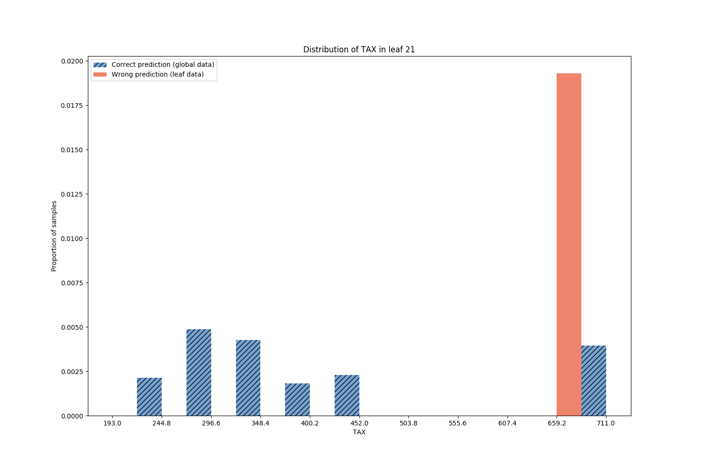

Note
Click here to download the full example code
Model Error Analysis for the Boston houses dataset¶
Here we train a RandomForestRegressor to predict the price of the houses in Boston. This is our primary model. Then we build a secondary model, called Model Performance Predictor (MPP), to predict on what samples the primary model returns wrong or correct predictions. The MPP is a DecisionTree returning a binary outcome success/failure. The leaf nodes yielding failure outcome gather the samples mis-predicted by the primary model. Plotting the feature distributions of these samples and comparing to the whole data highlights the subpopulations where the model works poorly.
Those are the necessary imports and initializations
from sklearn.datasets import load_boston
from sklearn.model_selection import train_test_split
from sklearn.ensemble import RandomForestRegressor
import numpy as np
import random
import matplotlib.image as mpimg
import matplotlib.pyplot as plt
from mea.error_analyzer import ErrorAnalyzer
from mea.error_visualizer import ErrorVisualizer
default_seed = 10
np.random.seed(default_seed)
random.seed(default_seed)
Load Boston houses dataset
dataset = load_boston()
X = dataset.data
y = dataset.target
feature_names = dataset.feature_names
X_train, X_test, y_train, y_test = train_test_split(X, y)
Train a RandomForestRegressor
model = RandomForestRegressor()
model.fit(X_train, y_train)
r2_score = model.score(X_test, y_test)
print("R2 = %.2f" % r2_score)
Out:
R2 = 0.87
Fit a Model Performance Predictor on the model performances
error_analyzer = ErrorAnalyzer(model, feature_names=feature_names)
error_analyzer.fit(X_test, y_test)
Print metrics regarding the Model Performance Predictor
Out:
The MPP was trained with accuracy 98.43%.
The Decision Tree estimated the primary models accuracy to 86.61%.
The true accuracy of the primary model is 85.04.%
The Fidelity of the MPP is 98.43%.
The MPP is considered representative of the primary model performances.
Plot the Model Performance Predictor Decision Tree
error_visualizer = ErrorVisualizer(error_analyzer)
tree_src = error_visualizer.plot_error_tree()
# the output of ``plot_error_tree`` is rendered automatically in a python notebook
# the following is for rendering in this sphynx gallery
tree_src.format = 'png'
tree_src.render('tree')
tree_img = mpimg.imread('tree.png')
plt.figure(figsize=(20, 20))
plt.imshow(tree_img)
plt.axis('off')

Print the details regarding the decision tree nodes containing the majority of errors
error_analyzer.error_node_summary(leaf_selector="all_errors", add_path_to_leaves=True, print_summary=True);
Out:
LEAF 12:
Correct predictions: 0 | Wrong predictions: 10 | Local error (purity): 1.00 | Global error: 0.53
Path to leaf:
AGE > 82.15
LSTAT <= 8.96
RM <= 8.21
LEAF 14:
Correct predictions: 0 | Wrong predictions: 2 | Local error (purity): 1.00 | Global error: 0.11
Path to leaf:
AGE > 82.15
LSTAT <= 8.96
RM > 8.21
AGE <= 89.20
LEAF 3:
Correct predictions: 0 | Wrong predictions: 1 | Local error (purity): 1.00 | Global error: 0.05
Path to leaf:
AGE <= 82.15
LSTAT <= 25.53
TAX <= 204.50
LEAF 9:
Correct predictions: 0 | Wrong predictions: 1 | Local error (purity): 1.00 | Global error: 0.05
Path to leaf:
AGE <= 82.15
LSTAT > 25.53
LEAF 17:
Correct predictions: 0 | Wrong predictions: 1 | Local error (purity): 1.00 | Global error: 0.05
Path to leaf:
AGE > 82.15
LSTAT > 8.96
DIS <= 1.32
LEAF 19:
Correct predictions: 0 | Wrong predictions: 1 | Local error (purity): 1.00 | Global error: 0.05
Path to leaf:
AGE > 82.15
LSTAT > 8.96
DIS > 1.32
TAX <= 213.00
LEAF 21:
Correct predictions: 0 | Wrong predictions: 1 | Local error (purity): 1.00 | Global error: 0.05
Path to leaf:
AGE > 82.15
LSTAT > 8.96
DIS > 1.32
TAX > 213.00
RM <= 4.12
Plot the feature distributions of samples in the nodes containing the majority of errors Rank features by correlation to error
error_visualizer.plot_feature_distributions_on_leaves(leaf_selector="all_errors", top_k_features=3)


- 
Out:
Leaf 12 (Wrong prediction: 1.000, Correct prediction: 0.000)
Leaf 14 (Wrong prediction: 1.000, Correct prediction: 0.000)
Leaf 3 (Wrong prediction: 1.000, Correct prediction: 0.000)
Leaf 9 (Wrong prediction: 1.000, Correct prediction: 0.000)
Leaf 17 (Wrong prediction: 1.000, Correct prediction: 0.000)
Leaf 19 (Wrong prediction: 1.000, Correct prediction: 0.000)
Leaf 21 (Wrong prediction: 1.000, Correct prediction: 0.000)
/Library/Frameworks/Python.framework/Versions/3.6/lib/python3.6/site-packages/mea-0.0.1-py3.6.egg/mea/error_visualizer.py:49: RuntimeWarning: More than 20 figures have been opened. Figures created through the pyplot interface (`matplotlib.pyplot.figure`) are retained until explicitly closed and may consume too much memory. (To control this warning, see the rcParam `figure.max_open_warning`).
plt.figure(figsize=figsize)
Discussion¶
Model Performance Predictor Metrics¶
We are dealing with a regression task, but the metrics highlight the accuracy of the primary model and its estimate given by the Model Performance Predictor. Here the primary predictions of price have been categorized in two classes: ‘Correct prediction’ and ‘Wrong prediction’ by thresholding the deviation of the prediction from the true value. Close enough predictions are Correct prediction, the others are Wrong prediction. For more details, have a look at the documentation. The accuracy is then the number of Correct predictions over the total. The MPP is representative of the behavior of the primary model as the true primary accuracy and the one estimated by the MPP are close.
Model Failures¶
Let’s focus on the nodes of the MPP DecisionTree, in particular the leaf nodes
of class ‘Wrong prediction’. These leaves contain the majority of errors, each
leaf clustering a subpopulation of errors with different feature values. The largest
and purest failure nodes are highlighted when printing the error node summary, and
also when plotting the feature distributions in the node (leaf_selector="all_errors").
From the feature distributions, sorted by correlation with the error, we can see that
the majority of problems occur for extreme values of features DIS and TAX.
In the next iteration of model design, the primary model needs to be improved for these
subpopulations.
Total running time of the script: ( 0 minutes 11.753 seconds)
Estimated memory usage: 318 MB